Mockup
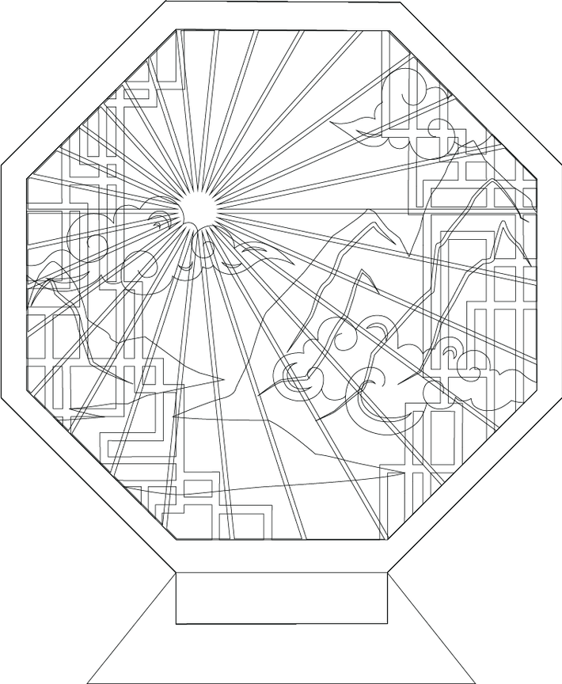
Step 1: Gather Materials, Machines, & Tools
Materials
- Acrylic Sheets (Clear)
- Cardboard
- Wood
Machines & Tools
- Laser Cutter
- Band Saw
- Dremel
- Caliper
- Ruler
Step 2: Design Panels
Inspiration:Images of traditional Chinese window architecture (left, middle)
Yearbook cover I designed in 2019 (right)
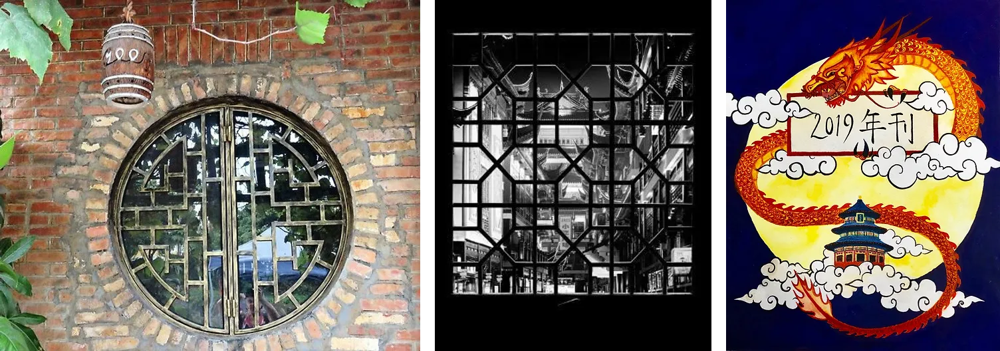
Final panel designs
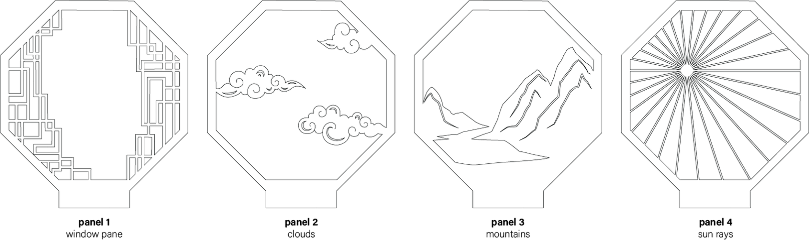
Step 3: Laser Cut Prototype
- Prepare and measure out cardboard to use as material for prototyping in the laser cutter
- Set the laser cutter to cardboard cutting settings
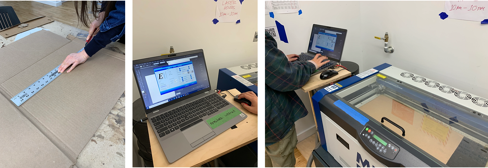
Cardboard prototype after laser cutting
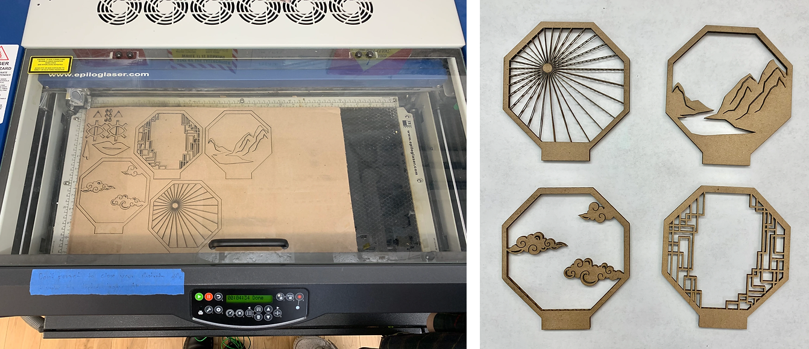
Cardboard prototype stacked in order
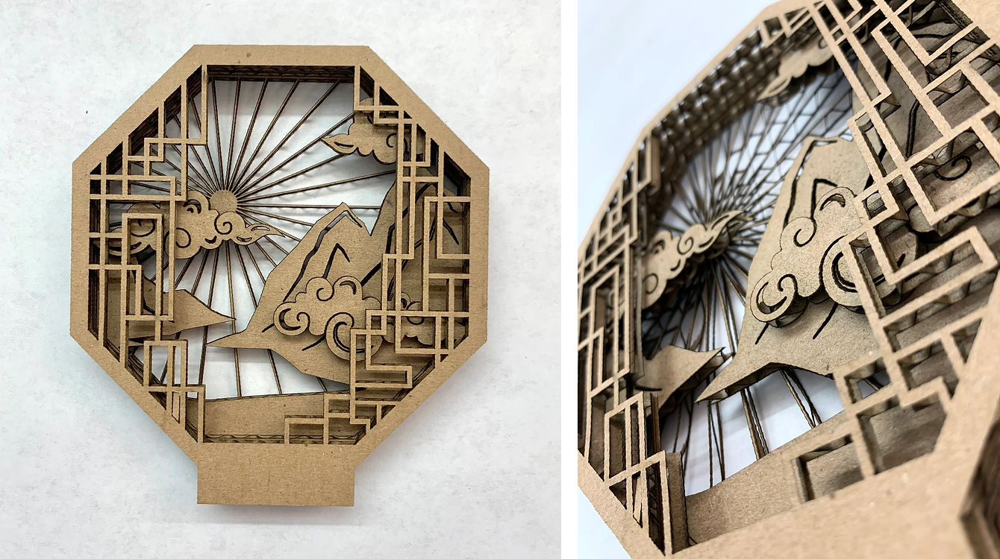
Step 4: Creating Acrylic Version
- Measure and prepare clear acrylic sheets for laser cutting
- Set the laser cutter to cut 1/8 inch thick acrylic sheet
- Laser cut the acrylic sheet
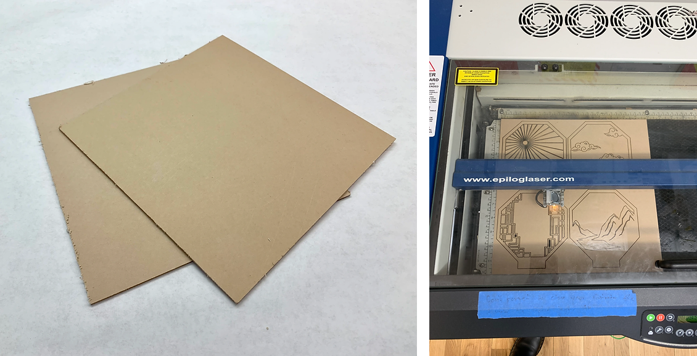
Panels cut out of acrylic sheets
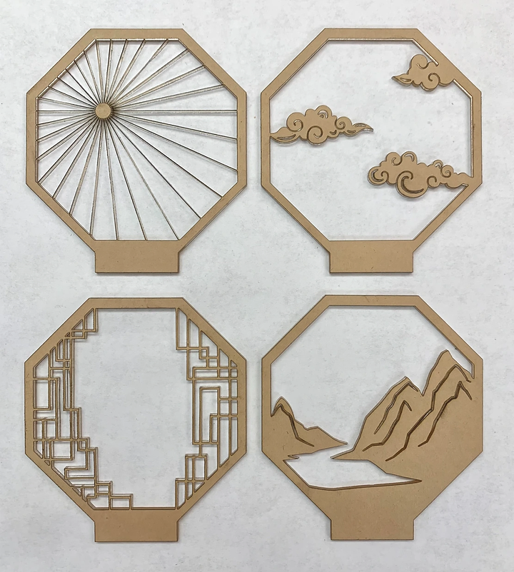
Step 5: Peel off the acrylic protective film
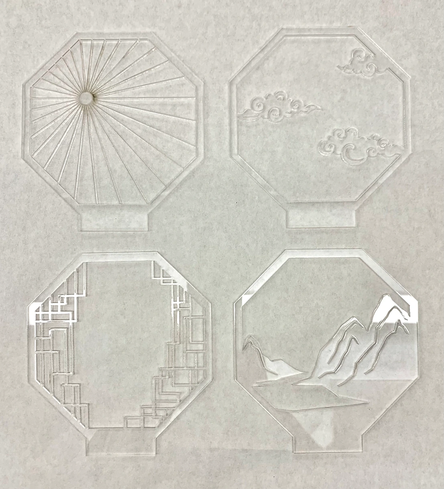
Step 6: Preparing the Wooden Stand
- Measure out, mark, and cut the wood using the band saw
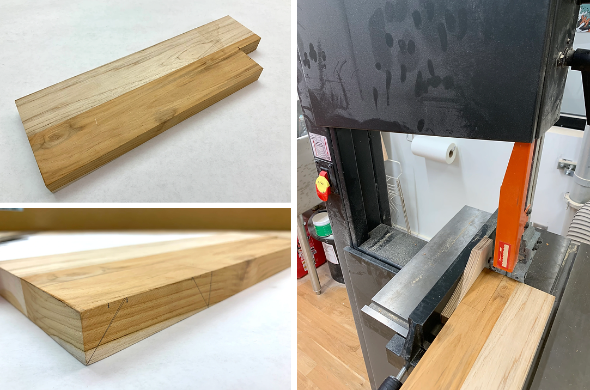
Step 7: Sanding and cutting the panel slots into the wood
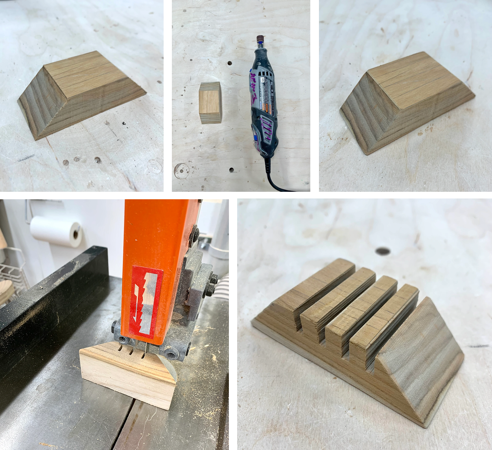
Finished Piece
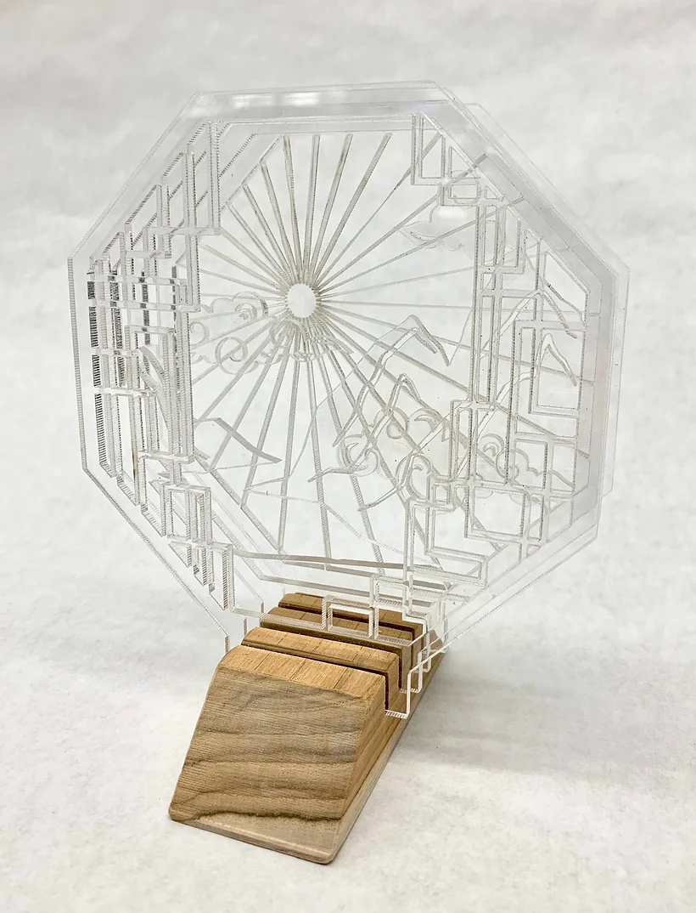
What would I do differently next time?
- Take into account the extra material that the laser cutter eats up and make the sun rays in panel 4 thicker -> Current sun rays are extremely thin and fragile.
- Pick a different color of acrylic, perhaps a frosted/translucent white panel to enhance the detailed cuts of each panel.